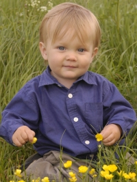

|  |
JOSEPH Winter 2005 Joseph just started the separation anxiety stage of his development. He'll cry whenever any family member leaves a room. That's about the most he's cried in his whole life. He's cheerful otherwise. He loves being outside, eating dirt and whatever else he can get into his mouth. Although I've fished out a nail, beads, felt pads, dog food, cardboard (and the list could go on forever) the only thing he has actually choked on is food he eats in his highchair. Joseph is walking now and loves to explore anything, anywhere. Want to know more about Joseph? CLICK HERE for his spotlight. |